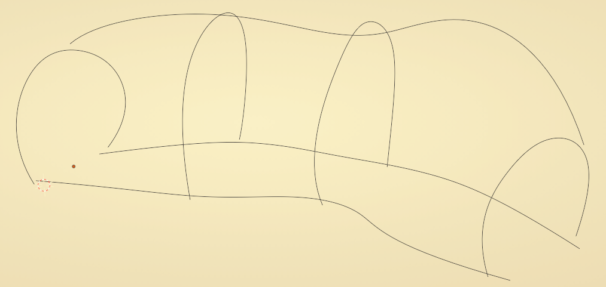
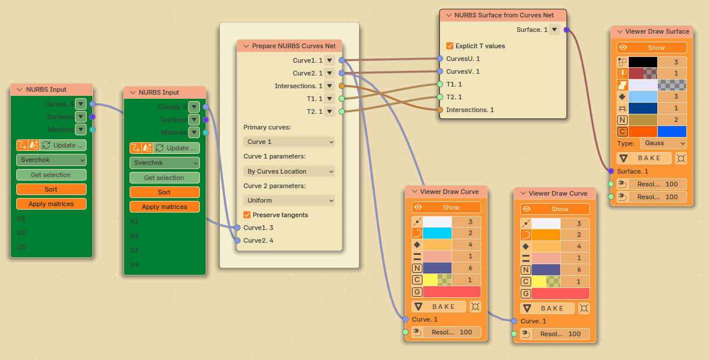
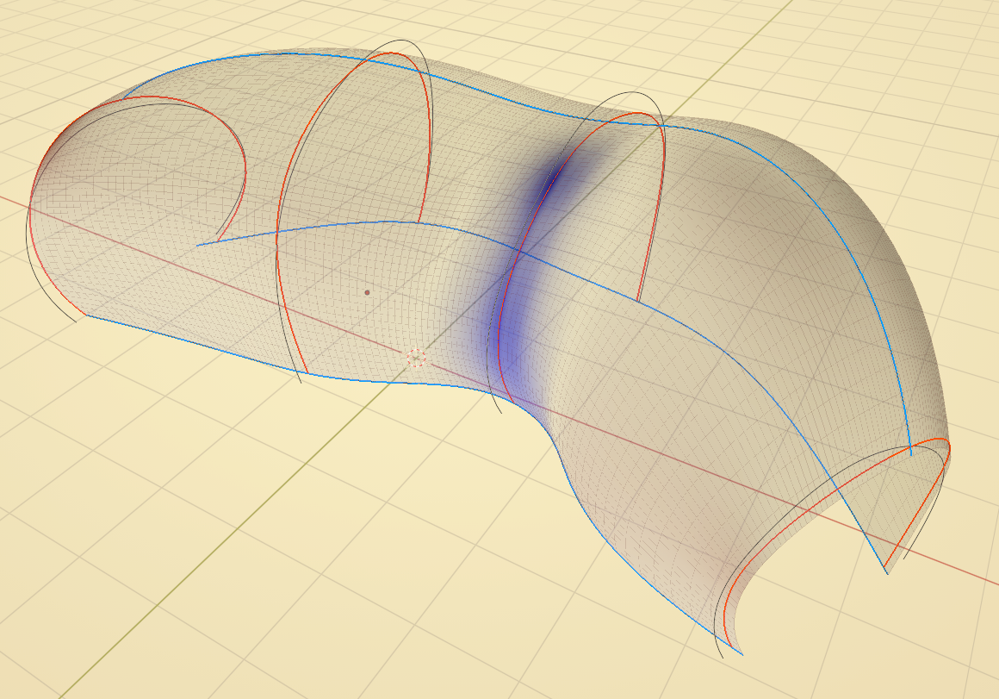
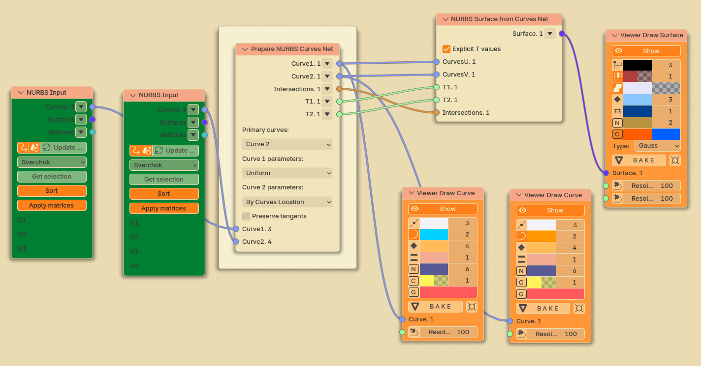
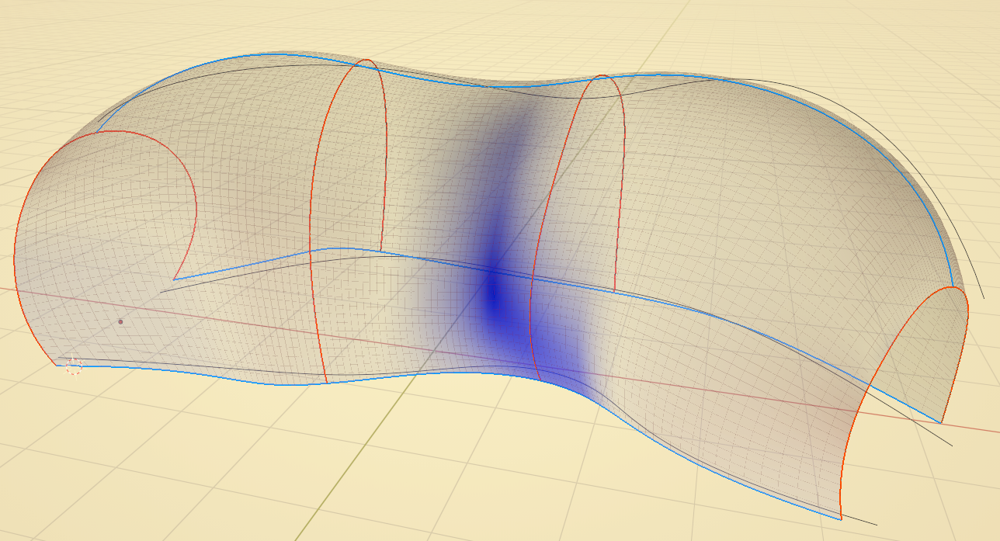
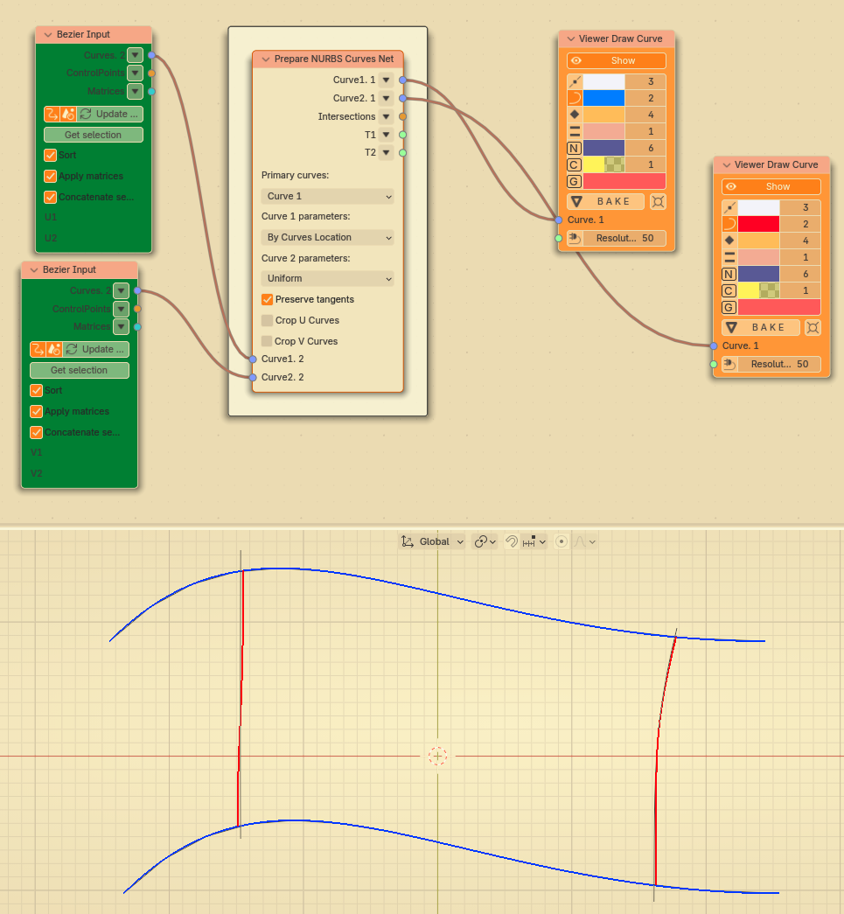
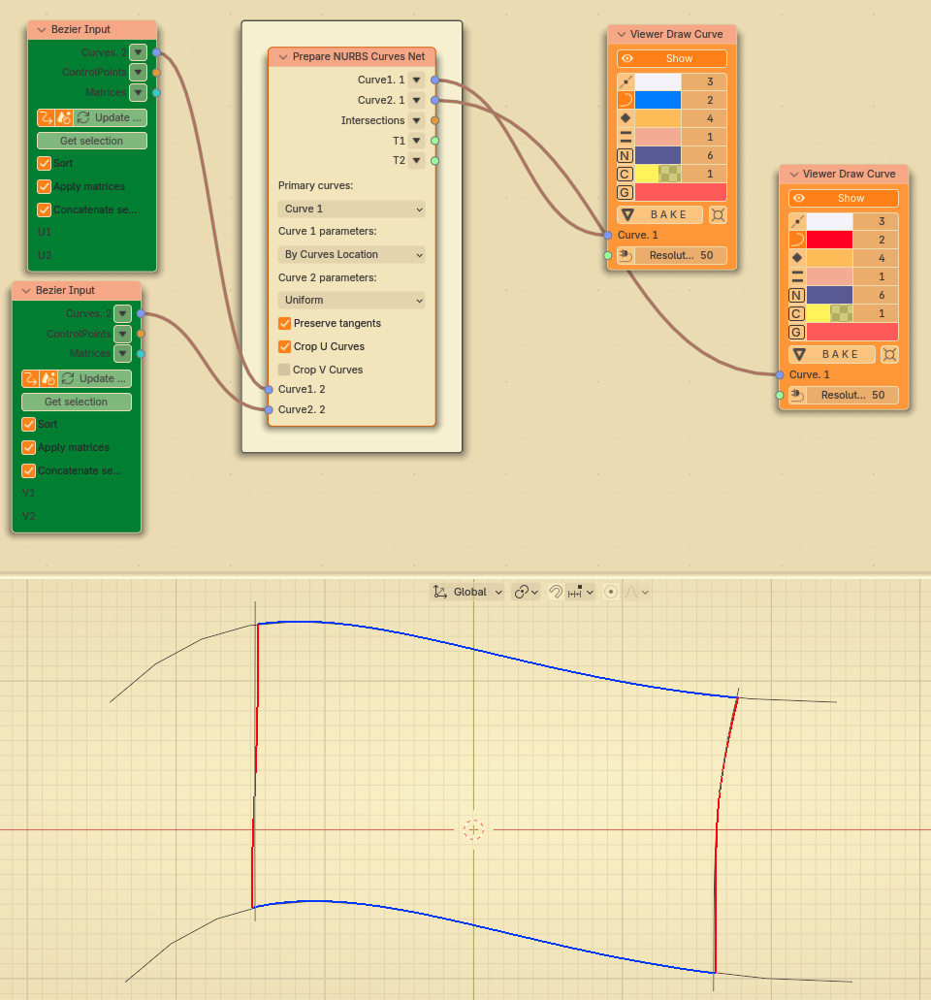

Prepare NURBS Curves Net¶
Dependencies¶
This node requires SciPy library for some of it’s functions.
Functionality¶
Suppose you want to build a Gordon surface (by use of “Surface from NURBS Curves Net” node). For that, you have to have two series of curves, and each curve from first series has to exactly intersect each curve from the second series. If you are creating curves manually (and introduce them into Sverchok by use of “Bezier Input” or “NURBS Input” nodes), it can be very hard to adjust curves manually so that they would intersect exactly.
With “Prepare NURBS Curves Net” node, you may define that, for example, first series of curves (“U Curves”) are primary, so that the surace must follow them exactly; while the second series of curves (“V Curves”) are “secondary”, so that they provide only approximate shape of surface. Then the node will slightly adjust curves from the second series in such a way, that they would exactly intersect curves from the first series. Or vice versa, you may define that curves from the second series are “primary”.
Also, if your initial curves intersect only approximately, then it is possible that there are “tails”, “leftovers” of curves at their ends, sticking out outside of all intersection points. Probably you do not need these leftovers. This node can cut them for you.
Inputs¶
This node has the following inputs:
Curve1. The first series of curves. This input is mandatory.
Curve2. The second series of curves. This input is mandatory.
T1. This input is available and mandatory when Curve 1 parameters parameter is set to Explicit. Curve T parameter values for first series of curves, where curves from the first series intersect should curves from the second series.
T2. This input is available and mandatory when Curve 2 parameters parameter is set to Explicit. Curve T parameter values for second series of curves, where curves from the second series should intersect curves from the first series.
Parameters¶
This node has the following parameters:
Primary curves. This defines which series of curves must be taken as “primary”, i.e. followed exactly; another series will be adjusted in order to intersect primary curves exactly. The available options are Curve 1, Curve 2. The default option is Curve 1.
Curve 1 parameters, Curve 2 parameters. This defines how the node should define T parameters of curves from the first and the second series, at which the curves must intersect. The available options are:
Uniform. Distribute intersection T parameter values uniformly in curve T space, according to number of curves in the second series. For example, if first series contains 3 curves, the second series contains 4 curves, and Curve 1 parameters is set to Uniform, then the node will assume that curves of the first series intersect curves from the second series at parameter values equal to 0, 1/3, 2/3 and 1.
By Curves Location. Calculate best T values for intersection, based on location of curves from the second series. This uses numeric algorithm to find the nearest point on the curve from one series to the point on curve from another series.
Explicit. Use explicit T values for intersection points, provided in T1 / T2 inputs.
It is not supported to set both these parameters to By Curves Location. However, to achieve best results, you usually need to set one of them to By Curves Location. The default option for both parameters is Uniform.
Preserve tangents. If checked, then, when adjusting curves, the node will try to preserve curve tangents direction. Note that with this parameter checked, the node can throw an error, if there are too few control points on the curves being adjusted. If you encounter such an error, you may have to add control points to curves (you may use “Refine Curve” node to do so). By default this parameter is not checked.
Crop Curves 1, Crop Curves 2. If checked, cut off “leftovers” of curves from first / second series, which stick out outside of all intersection points. Not checked by default.
Fit Samples. This parameter is available in the N panel only. Defines initial number of subdivisions for search of nearest points for “by curve location” options. The default value of 50 should be good enough for most cases; but in some cases you may want to increase this number for better precision, or reduce it for better performance.
Outputs¶
This node has the following outputs:
Curve1. Adjusted (or original) curves from the first series.
Curve2. Adjusted (or original) curves from the second series.
Intersections. Curve intersection points.
T1. For each curve from the first series, this output contains a list of T parameter values, at which this curve intersects curves from the second series.
T2. For each curve from the second series, this output contains a list of T parameter values, at which this curve intersects curves from the first series.
Examples of Usage¶
Let’s say you have the following net of curves. Note that the curves do not exactly intersect each other.
{kind=link}
Here we say that curves from the first series (along the construction) are primary. Black curves are original; red and blue curves are result of adjustment by this node. Note that now red and blue curves intersect exactly.
 {kind=link}
{kind=link}
Here we say that curves from the second series (across the construction) are primary:
 {kind=link}
{kind=link}
Simple example with “crop” flags disabled:
{kind=link}
And the same with “crop” enabled:
{kind=link}